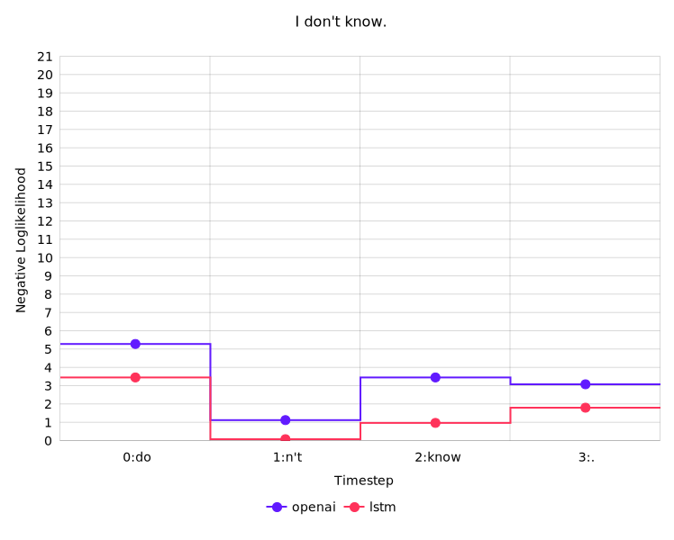
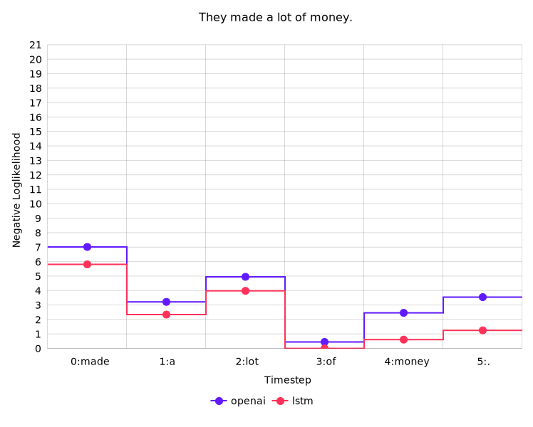
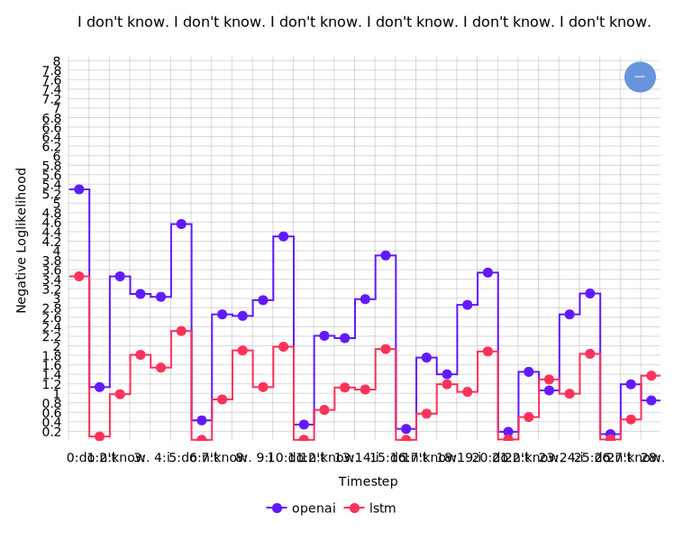
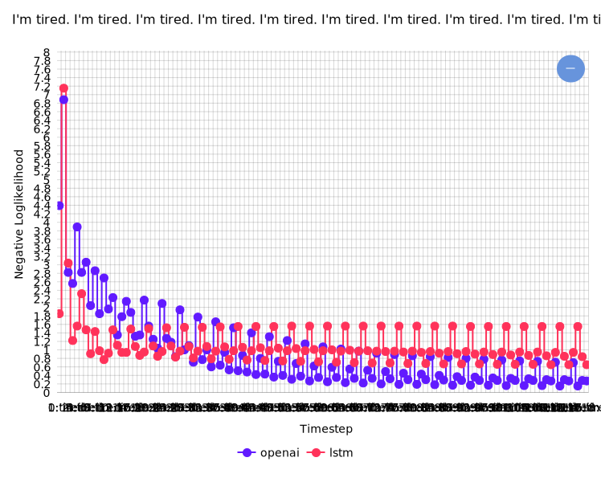

Compare per-word likelihood scores of two language models (OpenAi GPT and LSTM)
Empty Chart
Please enter a sentence:
Instructions
Entering a Sentence: Please type in a sentence in the text box above and click submit to create a graph. Please note that the lstm model expects capitalization.
Interpreting the Chart: The chart shows the prediction scores of two models (lstm and openai-gpt) for each word in the sentence given the previous words. The scores shown are negative loglikelihoods: $-log(p(w_t| w_1...w_{t-1}))$, so lower scores are better .
The first word is not scored, since there would be no previous words to condition on.
Additional Notes:
It sometimes takes several seconds for a new chart to be created.
A chart can be saved using the menu in the top right corner (the ... button).
You can use the cursor to selectively zoom.
The lstm model generally counts each word as being separated by spaces. Openai uses BPE (which effectively breaks some rare words into frequently-appearing character sequences).
Some examples:
High confidence at ends of phrases: When conditioning on "I do", the model is very confident about the next token being "n't", which causes the overall neg. loglikelihood to decrease a lot for "I don't know". There's similar behavior for the ends of common phrases like "a lot of":


Repetition: Another observation is that repetitions cause the neg. loglikelihood to start to go down:


Content vs function words: Neg. loglikelihood scores actually fluctuate quite a bit over natural language (particularly between content words like "grocery" vs. function words like "to"):